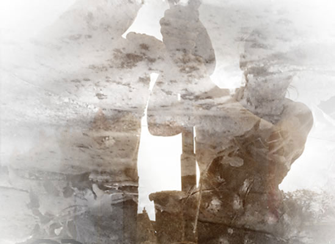

|
| Nouvelles 2014 [ photo : Cécile Mont-Reynaud,
Cie Lunatic ] |
| |
| ChÂteau de monthelon [manifeste] |
château de monthelon • 89420 Montréal • france |
Tel|
(0033) 3 86 32 18 24 || contact :
administration@monthelon.org
|
|
direction artistique : Cille Lansade | contact : cille.programmation@monthelon.org
|
|
| conception |
Le Château de Monthelon est un centre de recherches, de rencontres et de
production dédié aux artistes. Initié par Eva et Ueli Hirzel, ce projet culturel et
philosophique a donné naissance à un lieu de création hors normes. La
transformation et la rénovation de cet édifice datant du huitième siècle a
commencé en 1989, date de l’acquisition du terrain et des murs du château.
|
français
english
deutsch
|
|
L'Association
|
| 
| • Soutient la création d’oeuvres d’art, notamment de spectacles vivants,
destinés à être présentés au public;
• Soutient la recherche de toute personne en matière de cirque
contemporain : artistes, techniciens, universitaires, historiens, écrivains,
etc.; |
|
Les Participants et projets [En 25 ans plus de 1300
personnes soit au total 515 projets]
|
|
| rapport MORAL 2013 |
|
| rapport MORAL 2012 |
| |
la 9e Édition des Rencontres
|
|
En 2014, la 9e édition
des Rencontres se répartit
sur trois soirées — les jeudis 17,
24 et 31 juillet — au cours desquelles
les disciplines artistiques
se mélangent et se croisent
dans des spectacles étonnants :
cirque, danse, théâtre, musique,
marionnettes, arts plastiques,
etc.
Il y aura des présentations
de spectacles en cours
de création, des spectacles
aboutis ou improvisés,
des installations et
des performances.
|
Les Rencontres
|
|
| Les Expositions |
|
cabaret [come on bourgogne, light my fire]
|
| Retour aux projets de Ueli Hirzel |
| Au debut de page |